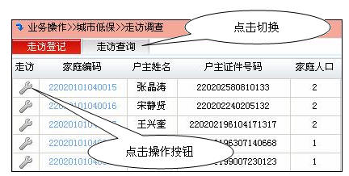
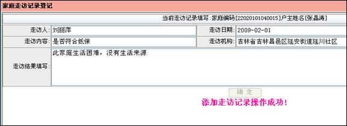

走访调查
民政部门受理救助申请后，需要对申请对象进行走访调查以确认其家庭信息以及是否符合救助标准，家庭信息发生变化要及时在居民生活数据库中进行修改。
点击菜单“基本救助>>城市低保>>走访调查”,进入城市低保走访调查页面，通过查询器查询出辖区内居民列表，如下所示

点击操作按钮，弹出家庭走访记录登记对话框,填写走访人，走访结果，走访内容，选择走访日期，走访机构, 点击确定后，显示添加走访记录操作成功,如下所示

单击对话框右上角
关闭本对话框返回列表，可以点击“走访调查”页对走访记录进行查询，如下所示